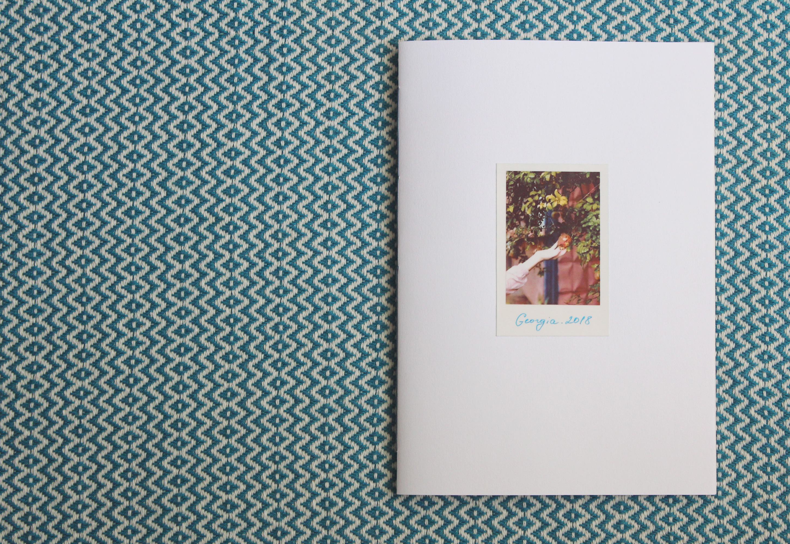
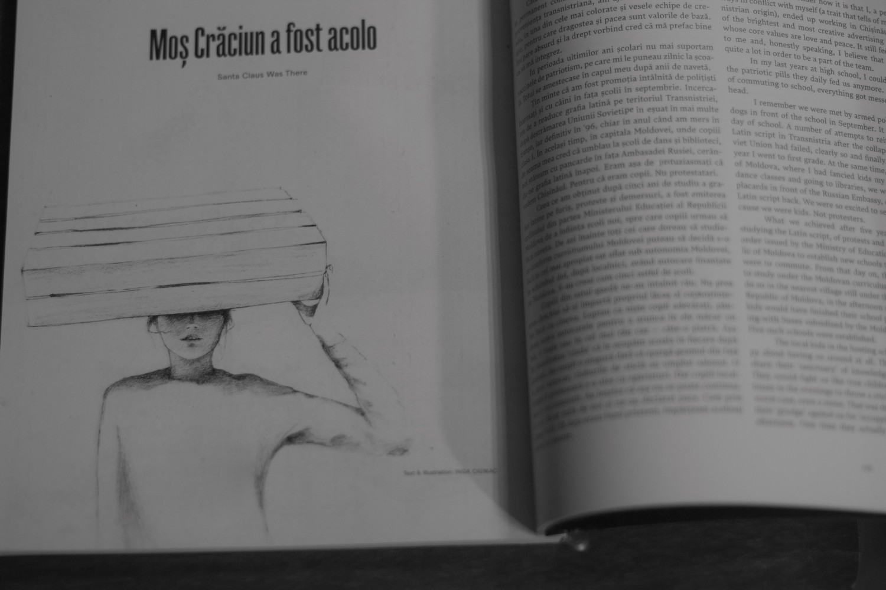

Georgia
Mașina mergea cu viteză. Nu reușeam să înțeleg ce crește pe copaci. Jumate de drum am tot ghicit. Chiar dacă taxistul a dat din cap în semn că nu, nu cresc la ei portocale, oricum aveam dubii dacă a înțeles ce l-am întrebat...
read more


Moș Crăciun a fost acolo
Era iarna 2014. Toate canalele media erau invadate cu noutăți despre Kiev și consecințele dureroase de la Maidan. Am hotărât să luăm prânzul împreună...
read more